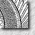
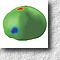

Students
Resource for Students
- Click here (for local only)
Current Postgraduate Students
- 邢金波,
Jinbo Xing
(Ph.D.)
- 劉煜新,
Yuxin Liu
(Ph.D.)
- 李嘉楠,
Jianan Li
(Ph.D.)
- 馬鑫,
Xin Ma
(Ph.D.)
- 楊昕廸,
Xindi Yang
(Ph.D.)
-
Sanuwani Dayarathna
(Ph.D.)
Former Postgraduate Students

|
劉漢元,
Hanyuan Liu
(Ph.D., 2023) "Towards Better Semantic Understanding of Shape and Color with Multimodal Alignment" |
|
|
劉卓杰,
Cheuk-Kit Lau
(M.Phil., 2023) "Taming Invertible Generation via Predictive Learning" |

|
|
胡文博,
Wenbo Hu
(Ph.D., 2022) (Now as Senior Researcher at Tencent ARC Lab) "Exploring Redundancy, Complementarity, and Inferencing between 2D and 2.5D/3D Representations " |

|
|
謝敏珊,
Minshan Xie
(Ph.D., 2022) "Deep Manga Semantic Understanding and Appearance Synthesis" |

|
|
駱路陽,
Luyang Luo
(Ph.D., 2022) "Understanding and Learning from Imperfect Data for Medical Image Diagnosis " |

|
|
夏孟涵,
Menghan Xia
(Ph.D., 2021) (now as Senior Researcher at Kling Team, Kuaishou Technology) "Invertible Generative Model and Its Applications" |

|
|
郭怡,
Yi Guo
(M.Phil., 2020) "Line Drawing Vectorization with Semi-Vector Representation and Deep Topology Reconstruction" |

|
|
李承澤,
Chengze Li
(Ph.D., 2020) (Now as Assistant Professor in Caritas Institute of Higher Education) "Deep Understanding of Sketches and Comics" |

|
|
章燭明,
Zhuming Zhang
(M.Phil., 2019) "Tone Mapping Algorithms with Visual Content Preservation" |

|
|
胡興鴻,
Xinghong Hu
(Ph.D., 2019) "Visual Sharing with Color Vision Deficiencies in Images and Videos" |

|
|
韓楚,
Chu Han
(Ph.D., 2019) "Pixelization, Colorization and Object Localization Using Deep Convolutional Neural Network with Minimal Manual Labeling" |

|
|
王健明,
Kin-Ming Wong
(Ph.D., 2018) "Spherical Blue Noise Sampling and Deep Learning based De-noising Techniques for Monte Carlo Rendering" |

|
|
朱海超,
Haichao Zhu
(Ph.D., 2017) "Video Temporal Correspondence Analysis" |
|
|
毛翔宇,
Xiangyu Mao
(Ph.D., 2017) "Perception Based Contour Detection and Its Applications" |

|
冼樂浚,
Lok-Tsun Sinn, Jimmy
(M.Phil., 2016) "Measuring Shape Similarity in Cluttered Images" |


|
沈務耀,
Wuyao Shen
(Ph.D., 2016) "Binocular Single Vision for Visual Entertainment Applications " |
|
關健聰,
Kin-Chung Kwan
(Ph.D., 2015) (Now as Assistant Professor at California State University,Sacramento) "Locally Scale-Invariant Descriptor for 2D Whole-Shape and Partial-Shape Matching" |
|
劉雪婷,
Xueting Liu
(Ph.D., 2014) (Now as Assistant Professor in Caritas Institute of Higher Education) "Perception Analysis for Manga and Anime Applications" [achievement] |
|
張琳玲,
Linling Zhang
(Ph.D. 2012) "Perception-based Image Similarity Metrics" [achievement] |
|
黃嘉穎,
Ka-Wing Wong (M.Phil. 2012) "Outline Tracing from Sketches" |
|
楊軒,
Xuan Yang
(Ph.D. 2012) "Binocular Tone Mapping" [achievement] |

|
李舜,
Shun Li
(Ph.D. 2012) "A Simulation System of Vascular Interventional Radiology Procedures for Training Endovascular Skills" |
|
|
王連生,
Liansheng Wang
(Ph.D., 2012) (Now as Assistant Professor in Xiamen University (厦门大学), China) "Applications of Sparse Regularization to Inverse Problem of Electrocardiography" |
|
姜雷,
Lei Jiang (M.Phil., 2011) "Deformation Analysis and Its Application in Image Editing" |
|
吳惠思,
Huisi Wu
(Ph.D., 2011) (Now as Professor in Shenzhen University (深圳大学), China) "Image-based Symmetry Analysis and Its Application" |
|
孟強,
Qiang Meng
(M.Phil., 2011) "User Interactive Techniques for Computer-Assisted Applications" |

|
朱家熙,
Alan Chu (M.Phil., 2010) "GL4D: A GPU-based Architecture for Interactive 4D Visualization" |
|
劉曉培,
Xiaopei Liu
(Ph.D., 2010) (Now as Associate Professor in ShanghaiTech University, China) "Image-based Illumination Analysis and Applications" [achievement] |
|
徐雪妙,
Xuemiao Xu
(Ph.D. 2009) (Now as Professor in South China University of Technology (华南理工大学), China) "The Design and Applications of Shape Similarity in Computer Graphics" [abstract] [achievement] |
|  |
彭偉民,
Wai-Man Pang
, Raymond (Ph.D., 2008) Assistant Professor, Institute of Higher Education, Hong Kong (2011-) Assistant Professor in Aizu University (会津大学), Japan (2009-2011) "Texture Aware Approaches for Enhancing Visual Appearance" [abstract] |
|  |
石林,
Lin
Shi
(Ph.D., 2008) (Now as Associate Professor in The Chinese University of Hong Kong (香港中文大學)) "Computational Techniques for Statistical Morphometric Analysis of 3D MRI Data of Human Skull and Brain" [abstract] |
|
萬亮,
Liang Wan
(Ph.D., 2007) (Now as Professor in Tianjin University (天津大学), China) "Equal-Area Spherical Maps for Computer Graphics" [abstract] |
|
屈穎歌,
Yingge Qu
(Ph.D., 2007) "Level Set Method for Image Segmentation and Manga Stylization" [abstract] |
|
王光宇,
Guangyu Wang (Ph.D. 2007) "GPU-Friendly Visual Rendering" [achievement] |
|
吳麗絲,
Lai-Sze Ng
(M.Phil., 2006) "Representing Spherical Functions with Rhombic Dodecahedron" [abstract] |
|
霍嘉凌,
Ka-Ling Fok (M.Phil., 2005) "GPU: The Paradigm of Parallel Power for Evolutionary Computation" [abstract] |

|
魏丹,
Dan Wei (M.Phil., 2005) "Exploiting the GPU Power for Image-based Relighting and Neural Network" |
|
陸揚,
Yang Lu
(M.Phil., 2004) "Digital Photo Album Management Techniques: From One Dimension to Multi-Dimension" [abstract] |
|
王劍清,
Jianqing Wang, Albert (M.Phil., 2004) "Exploiting the GPU Power for Intensive Geometric and Imaging Data Computation" [abstract] [achievement] |
|
王光宇,
Guangyu Wang (M.Phil., 2003) "A Learning-by-Example Method for Reducing BDCT Compression Artifacts in High-Contrast Images" [abstract] [achievement] |
|
何本務,
Pun-Mo Ho
, Matchman (M.Phil., 2003) "Compressing the Illumination-Adjustable Images with Principal Component Analysis" [abstract] |
|
李強達,
Keung-Tat Lee (M.Phil., 2002) "Fusing Scattered Images with Multiresolution Point-Based Model" [abstract] |
|
彭偉民,
Wai-Man Pang
, Raymond (M.Phil., 2002) "A Portable Capturing System for Image-based Relighting" [abstract] |
|
鄧偉鈞,
Wai-Kwan Tang
, Tommy (M.Phil., 2001) "Tele-Immersive Display with Live-Streamed Video" [abstract] |
|
馮景偉,
King-Wai Fung
, Desmond (HKUST, M.Phil., 2000) "Environment Illumination in Image-based Rendering" [abstract] |